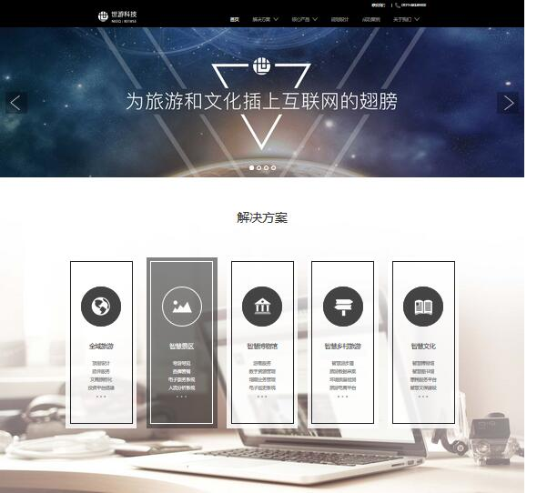
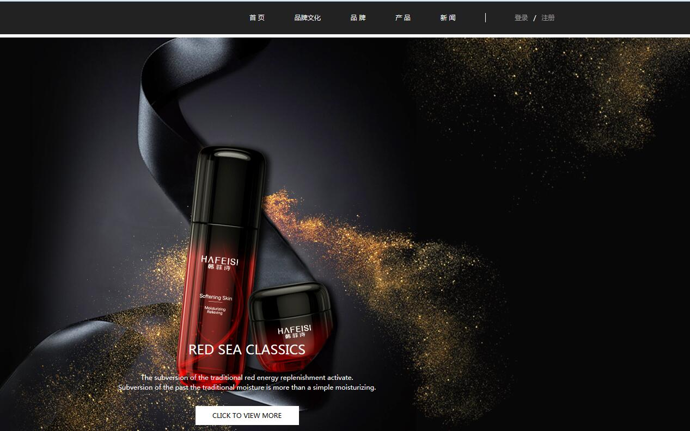
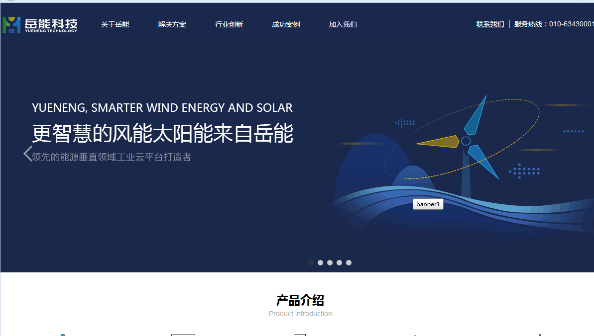

HTML+DIV+CSS
Portfolio
搜农坊
http://www.so50.com/
搜农坊是一家特色农产品购物平台。此网站它的功能有商品分类、产品中心、登录、注册、购物等模块！ 在项目中，采用前后端分离的开发模式，个人职责完成前端所有页面的展示，后端由专业的后台人员写的。 我只是负责调用数据接口完成页面的展示。我使用了 HTML+CSS+JS 实现网页 PC 端(和移动端)的 排版和布局，主要利用 jQuery 实现动态效果的展示，此外使用了插件 jQuery、jQuery.min.js 等插件

世游科技
http://www.tripbe.com/
项目描述：世游科技是一家专业提供智慧旅游以及文化综合解决方案的网站，这个网站所有页面由我独立完成，主要用到了jQuery插件，配合html+css+js完成 响应式布局，另外还用到了延迟加载图片的插件lazyLoad等插件。最终达到页面的展示效果

韩菲诗
http://hafeisi.cn/index.php
韩菲诗是一家互联网美妆品牌。个 人 职 责 ： 此 项 目 是 采 用 前 后 分 离 的 开 发 形 式 ， 我 主 要 负 责 前 端 各 个 页 面 的 实 现 ， 利 用 了 HTML+CSS+javaScript 前端技术实 现静态页面和页面的动态效果。用到了jQuery插件，SuperSlide轮播图插件

浙江科菲科技股份有限公司网页
http://www.ke-fei.com.cn/
该网页总导航包括6大块，首页 、惯用句科菲 、科菲资讯等 l个人职责：在项目中，我主要负责前端页面的展示和动态效果的实现该项目中我使用了 jQuey 插件，配合 HTML+CSS+JS完成
